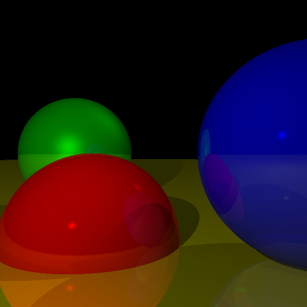
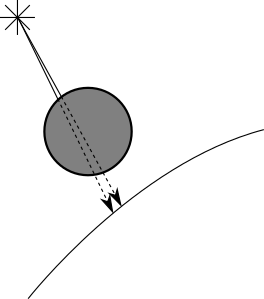
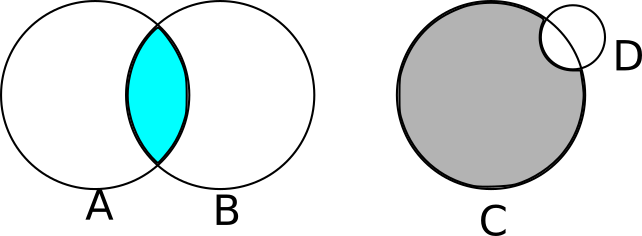
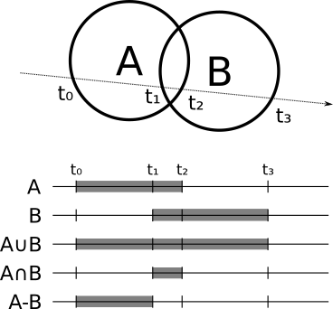
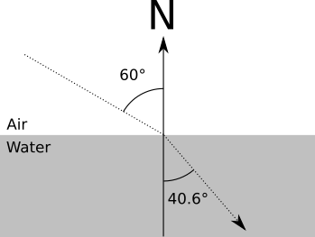

Extending the Raytracer
We’ll conclude the first part of the book with a quick discussion of several interesting topics that we haven’t yet covered: placing the camera anywhere in the scene, performance optimizations, primitives other than spheres, modeling objects using constructive solid geometry, supporting transparent surfaces, and supersampling. We won’t implement all of these changes, but I encourage you to give them a try! The preceding chapters, plus the descriptions offered below, give you solid foundations to explore and implement them by yourself.
Arbitrary Camera Positioning
At the very beginning of the discussion about raytracing we made three important assumptions: that the camera was fixed at \((0, 0, 0)\), that it was pointing to \(\vec{Z_+}\), and that its “up” direction was \(\vec{Y_+}\). In this section, we’ll lift these restrictions so we can put the camera anywhere in the scene and point it in any direction.
Let’s start with the camera position. You may have noticed that \(O\) is used exactly once in all the pseudocode: as the origin of the rays coming from the camera in the top-level method. If we want to change the position of the camera, the only thing we need to do is to use a different value for \(O\) and we’re done.
Does the change in position affect the direction of the rays? Not at all. The direction of the rays is the vector that goes from the camera to the projection plane. When we move the camera, the projection plane moves together with it, so their relative positions don’t change. The way we have written CanvasToViewport is consistent with this idea.
Let’s turn our attention to the camera orientation. Suppose you have a rotation matrix that represents the desired orientation of the camera. The position of the camera doesn’t change if you just rotate the camera around, but the direction it’s looking toward does; it undergoes the same rotation as the whole camera. So if you have the ray direction \(\vec{D}\) and the rotation matrix \(R\), the rotated \(D\) is just \(R \cdot \vec{D}\).
In summary, the only function that needs to change is the main function we wrote back in Listing 2-2. Listing 5-1 shows the updated function:
for x in [-Cw/2, Cw/2] {
for y in [-Ch/2, Ch/2] {
❶D = camera.rotation * CanvasToViewport(x, y)
❷color = TraceRay(camera.position, D, 1, inf)
canvas.PutPixel(x, y, color)
}
}We apply the camera’s rotation matrix ❶, which describes its orientation in space, to the direction of the ray we’re about to trace. Then we use the camera position as the starting point of the ray ❷.
Figure 5-1 shows what our scene looks like when rendered from a different position and with a different camera orientation.

Performance Optimizations
The preceding chapters focused on the clearest possible way to explain and implement the different features of a raytracer. As a result, it is fully functional but not particularly fast. Here are some ideas you can explore by yourself to make the raytracer faster. Just for fun, measure before-and-after times for each of these. You’ll be surprised by the results!
Parallelization
The most obvious way to make a raytracer faster is to trace more than one ray at a time. Since each ray leaving the camera is independent of every other ray and the scene data is read-only, you can trace one ray per CPU core without many penalties or much synchronization complexity. In fact, raytracers belong to a class of algorithms called embarrassingly parallelizable, precisely because their very nature makes them extremely easy to parallelize.
Spawning a thread per ray is probably not a good idea, though; the overhead of managing potentially millions of threads would probably negate the speed-up you’d obtain. A more sensible idea would be to create a set of “tasks,” each of them responsible for raytracing a section of the canvas (a rectangular area, down to a single pixel), and dispatch them to worker threads running on the physical cores as they become available.
Caching Immutable Values
Caching is a way to avoid repeating the same computation over and over again. Whenever there’s an expensive computation and you expect to use the result of this computation repeatedly, it might be a good idea to store (cache) this result and just reuse it next time it’s needed, especially if this value doesn’t change often.
Consider the values computed in IntersectRaySphere, where a raytracer typically spends most of its time:
a = dot(D, D) b = 2 * dot(OC, D) c = dot(OC, OC) - r * r
Different values are immutable during different periods of time.
Once you load the scene and you know the size of the spheres, you can compute r * r. That value won’t change unless the size of the spheres changes.
Some values are immutable for an entire frame, at the very least. One such value is dot(OC, OC) and it only needs to change between frames if the camera or a sphere moves. (Note that shadows and reflections trace rays that don’t start at the camera, so some care is needed to make sure the cached value isn’t used in that case.)
Some values don’t change for an entire ray. For example, you can compute dot(D, D) in ClosestIntersection and pass it to IntersectRaySphere.
There are many other computations that can be reused. Use your imagination! Not every cached value will make things faster overall, however, because sometimes the bookkeeping overhead might be higher than the time saved. Always use benchmarks to evaluate whether an optimization is actually helping.
Shadow Optimizations
When a point of a surface is in shadow because there is another object in the way, it’s quite likely that the point right next to it will also be in the shadow of the same object (this is called shadow coherence). You can see an example of this in Figure 5-2.

When searching for objects between the point and the light, to determine whether the point is in shadow, we’d normally check for intersections with every other object. However, if we know that the point immediately next to it is in the shadow of a specific object, we can check for intersections with that object first. If we find one, we’re done and we don’t need to check every other object! If we don’t find intersections with that object, we just revert back to checking every object.
In the same vein, when looking for ray-object intersections to determine whether a point is in shadow, you don’t really need the closest intersection; it’s enough to know that there’s at least one intersection, because that will be enough to stop the light from reaching the point! So you can write a specialized version of ClosestIntersection that returns as soon as it finds any intersection. You also don’t need to compute and return closest_t; instead, you can return just a Boolean value.
Spatial Structures
Computing the intersection of a ray with every sphere in the scene is somewhat wasteful. There are many data structures that let you discard entire groups of objects at once without having to compute the intersections individually.
Suppose you have several spheres close to each other. You can compute the center and radius of the smallest sphere that contains all these spheres. If a ray doesn’t intersect this bounding sphere, you can be sure that it doesn’t intersect any of the spheres it contains, at the cost of a single intersection test. Of course, if it does, you still need to check whether it intersects any of the spheres it contains.
You could go further and have several levels of bounding spheres (that is, groups of groups of spheres), forming a hierarchy that needs to be traversed all the way to the bottom only when there’s a good chance that one of the actual spheres will be intersected by a ray.
While the exact details of this family of techniques are outside the scope of this book, you can find more information under the name bounding volume hierarchy.
Subsampling
Here’s an easy way to make your raytracer \(N\) times faster: compute \(N\) times fewer pixels!
For each pixel in the canvas, we trace one ray through the viewport to sample the color of the light coming from that direction. If we had fewer rays than pixels, we’d be subsampling the scene. But how can we do this and still render the scene correctly?
Suppose you trace the rays for the pixels \((10, 100)\) and \((12, 100)\), and they happen to hit the same object. You can reasonably assume that the ray for the pixel \((11, 100)\) will also hit the same object, so you can skip the initial search for intersections with all the objects in the scene and jump straight to computing the color at that point.
If you skip every other pixel in both the horizontal and vertical directions, you could be doing up to 75 percent fewer primary ray-scene intersection computations—that’s a 4x speedup!
Of course, you may well miss a very thin object; this is an “impure” optimization, in the sense that, unlike the ones discussed before, it results in an image that closely resembles, but is not guaranteed to be identical to, the image without the optimization. In a way, it’s “cheating” by cutting corners. The trick is to know what corners can be cut while maintaining satisfactory results; in many areas of computer graphics, what matters is the subjective quality of the results.
Supporting Other Primitives
In the previous chapters, we’ve used spheres as primitives because they’re mathematically easy to manipulate; that is, the equations to find the intersections between rays and spheres are relatively simple. But once you have a basic raytracer than can render spheres, adding support to render other primitives doesn’t require much additional work.
Note that TraceRay needs to be able to compute just two things for a ray and any given object: the value of \(t\) for the closest intersection between them and the normal at that intersection. Everything else in the raytracer is object-independent!
Triangles are a good primitive to support. A triangle is the simplest possible polygon, so you can build any other polygon out of triangles. They’re mathematically easy to manipulate, so they’re a good way to represent approximations of more complex surfaces.
To add triangle support to the raytracer, you only need to change TraceRay. First, you compute the intersection between the ray (given by its origin and direction) and the plane that contains the triangle (given by its normal and its distance from the origin).
Since planes are infinitely big, rays will almost always intersect any given plane (except if they’re exactly parallel). So the second step is to determine whether the ray-plane intersection is actually inside the triangle. There are many ways to do this, including using barycentric coordinates or using cross-products to check whether the point is “on the inside” with respect to each of the three sides of the triangle.
Once you have determined that the point is inside the triangle, the normal at the intersection is just the normal of the plane. Have TraceRay return the appropriate values and no further changes will be required!
Constructive Solid Geometry
Suppose we want to render objects more complicated than spheres or curved objects that are difficult to model accurately using a set of triangles. Two good examples are lenses (like the ones in magnifying glasses) and the Death Star (that’s no moon . . . ).
We can easily describe these objects in plain language. A magnifying glass looks like two slices of a sphere glued together; the Death Star looks like a sphere with a smaller sphere taken out of it.
We can express this more formally as the result of applying set operations (such as union, intersection, or difference) to other objects. Continuing with our examples above, a lens can be described as the intersection of two spheres and the Death Star as a big sphere from which we subtract a smaller sphere (see Figure 5-3).

You might be thinking that computing Boolean operations of solid objects is a very tricky geometrical problem. And you’d be completely correct! Fortunately, it turns out that constructive solid geometry lets us render the results of set operations between objects without ever having to explicitly compute these results!
How can we do this in our raytracer? For every object, you can compute the points where the ray enters and exits the object; in the case of a sphere, for example, the ray enters at \(min(t_1, t_2)\) and exits at \(max(t_1, t_2)\). Suppose you want to compute the intersection of two spheres; the ray is inside the intersection when it’s inside both spheres, and it’s outside when it’s outside either sphere. In the case of the subtraction, the ray is inside when it’s inside the first object but not the second one. For the union of two objects, the ray is inside when it’s inside either of the objects.
More generally, if you want to compute the intersection between a ray and the object \(A \bigodot B\) (where \(\bigodot\) is any set operation), you first compute the intersection between the ray and \(A\) and \(B\) separately, which gives you the ranges of \(t\) that are “inside” for each object, \(R_A\) and \(R_B\). Then you compute \(R_A \bigodot R_B\), which is the “inside” range for \(A \bigodot B\). Once you have this, the closest intersection between the ray and \(A \bigodot B\) is the smallest value of \(t\) that is both in the “inside” range of the object, and between \(t_{min}\) and \(t_{max}\). Figure 5-4 shows the inside range for the union, intersection, and subtraction of two spheres.

The normal at the intersection is either the normal of the object that produced the intersection or its opposite, depending on whether you’re looking at the “outside” or “inside” of the original object.
Of course, \(A\) and \(B\) don’t have to be primitives; they can be the result of set operations themselves! If you implement this cleanly, you don’t even need to know what \(A\) and \(B\) are, as long as you can get intersections and normals out of them. This way you can take three spheres and compute, for example, \((A \cup B) \cap C\).
Transparency
So far we have rendered every object as if it were fully opaque, but this doesn’t need to be the case. We can render partially transparent objects, like a fishbowl.
Implementing this is quite similar to implementing reflection. When a ray hits a partially transparent surface, you compute the local and reflected color as before, but you also compute an additional color—the color of the light coming through the object, obtained with another call to TraceRay. Then you blend this color with the local and reflected colors, depending on how transparent the object is, much in the same way we did when computing object reflections.
Refraction
In real life, when a ray of light goes through a transparent object, it changes direction (this is why when you submerge a straw in a glass of water, it looks “broken”). More precisely, a ray of light changes direction when it’s going through a material (such as air) and enters a different material (such as water).
The way the direction changes depends on a property of each material, called its refraction index, according to the following equation, called Snell’s Law:
\[{\sin(\alpha_1) \over \sin(\alpha_2)} = { n_2 \over n_1 }\]
Here, \(\alpha_1\) and \(\alpha_2\) are the angles between the ray and the normal before and after crossing the surface, and \(n_1\) and \(n_2\) are the refraction indices of the material outside and inside objects.
For example, \(n_{air}\) is approximately \(1.0\), and \(n_{water}\) is approximately \(1.33\). So for a ray of light entering water at a \(60^\circ\) angle, we have
\[{\sin(60) \over \sin(\alpha_2)} = {1.33 \over 1.0}\]
\[\sin(\alpha_2) = {\sin(60) \over 1.33}\]
\[\alpha_2 = \arcsin({\sin(60) \over 1.33}) = 40.628^\circ\]
This example is shown in Figure 5-5.

At the implementation level, each ray would have to carry an additional piece of information: the refraction index of the material it is currently going through. When the ray intersects a partially transparent object, you compute the new direction of the ray from that point, based on the refraction indices of the current material and the new material, and then proceed as before.
Stop for a moment to consider this: if you implement constructive solid geometry and transparency, you can model a magnifying glass (the intersection of two spheres) that will behave like a physically correct magnifying glass!
Supersampling
Supersampling is more or less the opposite of subsampling. In this case you’re looking for accuracy instead of performance. Suppose the rays corresponding to two adjacent pixels hit different objects. You would paint each pixel with the corresponding colors.
But remember the analogy that got us started: each ray is supposed to determine the “representative” color for each square of the “grid” we’re looking through. By using a single ray per pixel, we’re arbitrarily deciding that the color of the ray of light that goes through the middle of the square is representative of the whole square, but that may not be true.
The way to solve this is just to trace more rays per pixel—4, 9, 16, as many as you want—and then average them to get the color for the pixel.
Of course, this makes your raytracer 4, 9, or 16 times slower, for the exact same reasons why subsampling made it \(N\) times faster. Fortunately, there’s a middle ground. You can assume object properties change smoothly over their surface, so shooting four rays per pixel that hit the same object at very slightly different positions may not improve the scene much. So you can start with one ray per pixel and compare adjacent rays: if they hit different objects or if the color differs by more than a certain threshold, you apply pixel subdivision to both.
Summary
In this chapter, we have briefly introduced several ideas you can explore by yourself. These modify the basic raytracer we’ve been developing in new and interesting ways—making it more efficient, able to represent more complex objects, or modeling rays of light in a way that better approximates our physical world.
This first part of the book should be proof that raytracers are beautiful pieces of software that can produce stunningly beautiful images using nothing but straightforward, intuitive algorithms and simple math.
Sadly, this purity comes at a cost: performance. While there are numerous way to optimize and parallelize raytracers, as discussed in this chapter, they’re still too computationally expensive for real-time performance; and while hardware gets faster every year, some applications demand pictures 100 times faster—with no loss in quality. Of all these applications, games are the most demanding: we expect picture-perfect images drawn at least 60 times per second. Raytracers just don’t cut it.
How have videogames been doing it since the early 90s, then?
The answer lies in a completely different family of algorithms that we’ll explore in the second part of this book.